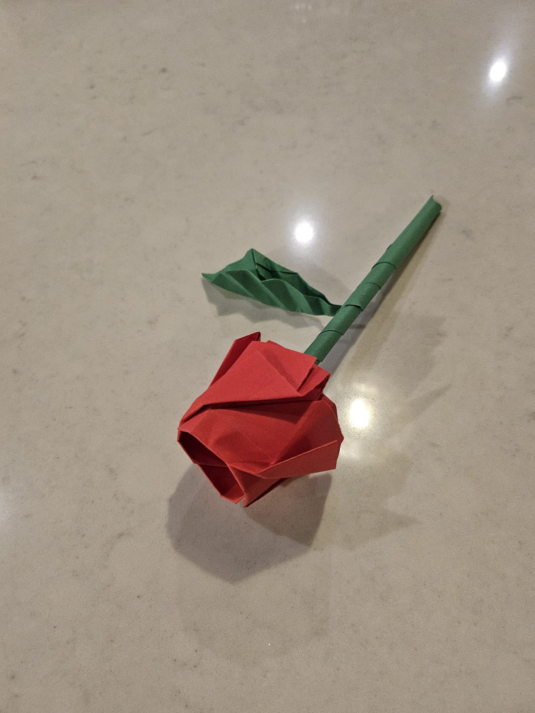
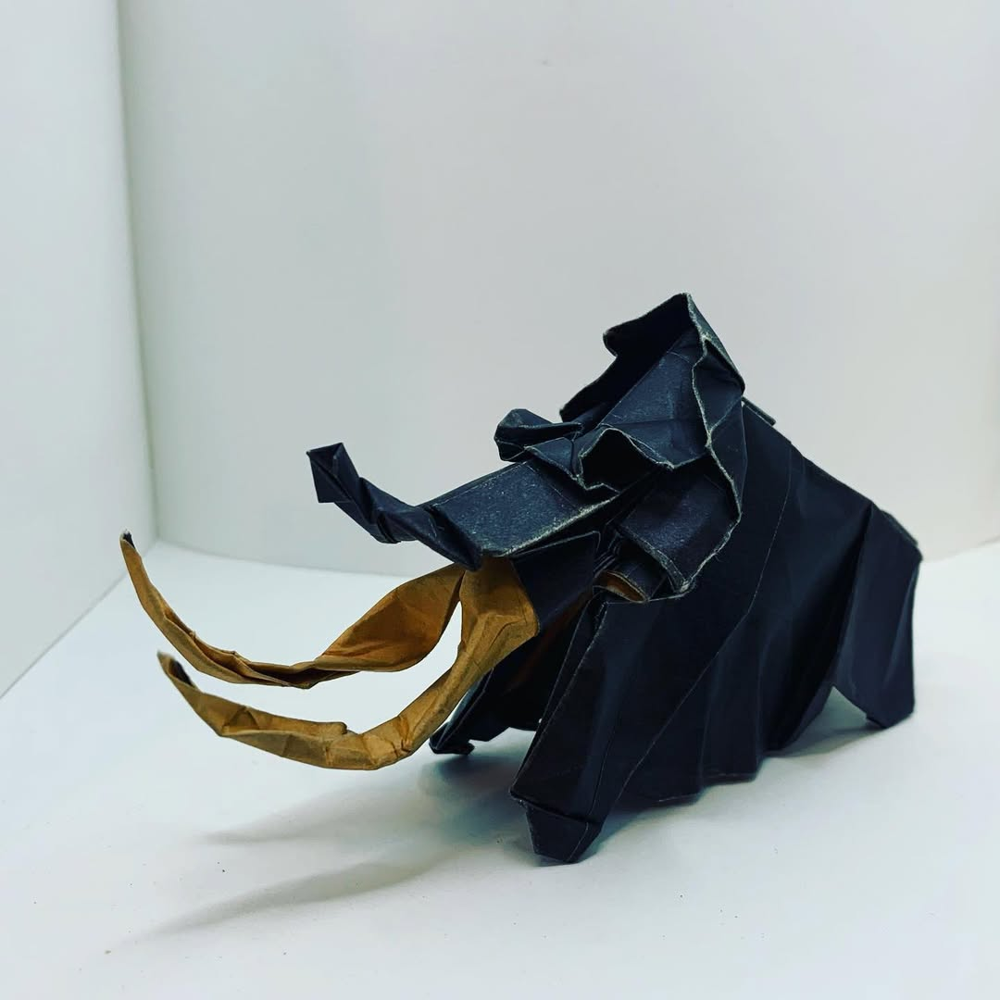

Eric J. Pabón Cancel
Ph.D. Student, Department of Mathematics
Mathematical Sciences Building, Office 609
Purdue University, West Lafayette
About Me
I am a graduate Mathematics student at Purdue University. During the summer of 2025, I was a research intern in the Computing & Information Science Research Foundation at Sandia National Laboratories (Livermore, California), as part of the 2025 Universities Research Association-Sandia Graduate Student Summer Fellowship, where I worked on data-driven machine learning surrogate models (data-driven closure models) and data assimilation. I am a former research intern at the 2023 MIT Lincoln Laboratory Summer Research Program, where I worked on unsupervised machine learning under Group 39 of Division 3, as part of the National GEM Consortium Fellowship Employer Sponsor Internship. In the summer of 2022, I was a participant at the Summer@ICERM2022: Computational Combinatorics REU Program at Brown University, where I researched parking functions and algebraic combinatorics under Prof. Pamnela Harrisfrom the University of Wisconsin-Milwaukee. In the summer of 2021, I participated in the East Tennessee State Universtiy & University of Puerto Rico at Ponce REU Program in Algebraic Coding Theory, Probability and Combinatorics, where I researched algebraic-geometric error-correcting codes and linear error-correcting codes under Prof. Fernando Piñero from the University of Puerto Rico at Ponce. I earned my Bachelor of Science degree in Mathematics at the University of Puerto Rico, Mayagüez Campus (UPRM), where I also worked as a research assistant in abstract algebra and number theory under Prof. Reyes M. Ortiz Albino. Some of my hobbies include origami, watching pop-culture related movies and shows, enjoying nature, and playing percussion instruments. If you have any questions, feel free to contact me through email or LinkedIn.
Contact and CV
Email:
epabonca@purdue.edu
LinkedIn Profile:
linkedin.com/in/ericjpaboncancel/
Curriculum Vitae
Research Interests
My research interests currently lie in dynamical systems, machine learning, and computational & applied math. During my bachelor's degree however, I did venture into more theoretical research areas, such as number Theory, abstract Algebra and combinatorics.
Papers and Preprints
- S. Polk, E.J. Pabon-Cancel, R. Paleja, K. Chestnut-Chang, R. Jensen and M. Ramirez. Unsupervised Behavior Inference From Human Action Sequences. 2024 IEEE Conference on Games (CoG), Milan, Italy, 2024, pp. 1-8. DOI: https://doi.org/10.1109/CoG60054.2024.10645587 .
- A. Allen, E.J. Pabon-Cancel, L. Polanco and F. Piñero-Gonzalez. Improving the Dimension Bound of Hermitian-Lifted Codes. arXiv: https://arxiv.org/abs/2302.01557 .
-
D. Chen, P.E. Harris, J. Carlos Martinez Mori, E.J. Pabon-Cancel,
and G. Sargent. Permutation Invariant Parking Assortments.
Enumerative Combinatorics and Applications.
4:1, 1-25 (2024). #S2R4.
DOI: https://doi.org/10.54550/ECA2024V4S1R4 . arXiv: https://arxiv.org/abs/2211.01063 . -
I. Byrne, N. Dodson, R. Lynch, E.J. Pabon-Cancel and F.
Piñero-Gonzalez. Improving the Minimum Distance Bound of Trace
Goppa Codes. Designs, Codes and Cryptography.
91, 2649–2663 (2023).
DOI: https://doi.org/10.1007/s10623-023-01216-6 . arXiv: https://arxiv.org/abs/2201.03741 .
Contributions to the profession
- P.E. Harris, Z. Markman, L. Martinez, A. Mock, E.J. Pabón-Cancel, A. Verga, and S. Wang. A Model for a One-Hour Workshop on Mentoring. MAA Focus, 43(1):18-21, 2023.
Origami


- Some pictures of origami models I have folded in the past. Origami Rose (designed by Jo Nakashima), Origami Mammoth (designed by Satoshi Kamiya)